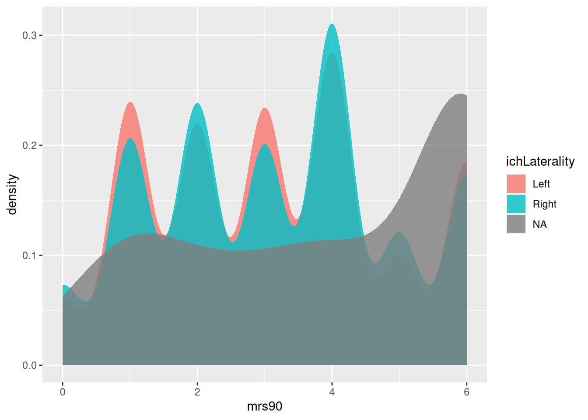
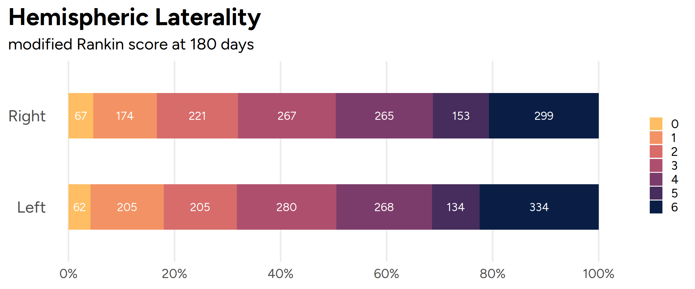
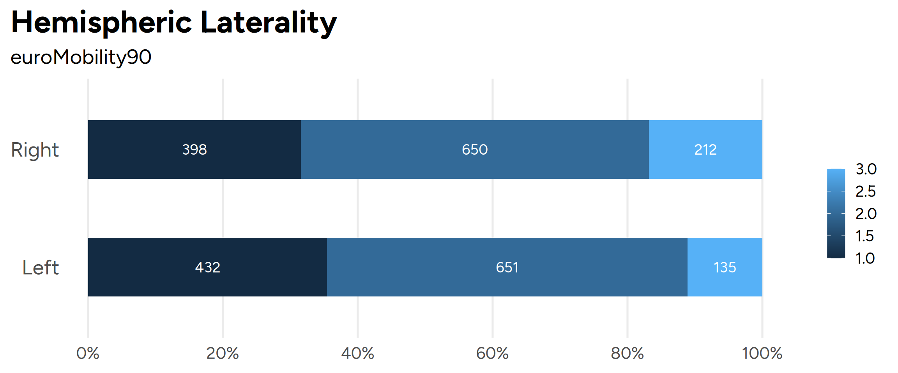

Does the hemispheric location of an intracerebral hemorrhage (ICH) influence outcomes such as death, disability, or health-related quality of life?
Clinical manifestations of brain injury differ between left and right hemispheric lesions because of differences in function, in particular language and spatial awareness.
It is unclear if these clinical differences result in differences in functional disability or health-related quality of life. Previous studies have demonstrated conflicting results, with some demonstrating worse levels of disability for patients with left hemispheric lesions as well as the opposite.
We aim to evaluate the question of if patients with left-hemispheric lesions have worse levels of disability or health-related quality of life.
Data Source
We used individual patient data from 5 NINDS multicenter prospective studies enrolling patients with intracerebral hemorrhage (4 randomized trials: ATACH2, CLEAR3, MISTIE-II, and MISTIE-III and 1 observational study: ERICH).
Visualizing the Data
modified Rankin Scale
Overall, there does not appear to be a big difference in disability as measured by modified Rankin Scale. This is true at any of the time points used.

Health-Related Quality of Life
Overall, there appears to be a small differences in health related quality of life, especially with mobility and self-care. This is true at any of the time points used.

Health-Related Quality of Life - Visual Analog Scale
Draw Assumptions using a Causal Diagram

Add Deaths to ATACH data!
Model Assumptions
Diagnose Models
Estimate the Causal Effect
Conduct Sensitivity Analysis on the Effect Estimate
Source Code
---title: "Hemispheric Lateralization in ICH"subtitle: "Analysis"author: "Nikhil Patel"project: type: defaultformat: html: code-fold: true code-tools: true toc: true html-math-method: katex css: "styles.css"---```{r setup and data import}#| output: false#| echo: falselibrary(tidyverse)# library(gt) # Fancy tableslibrary(tableone)library(data.table)library(haven) # Importing SAS Fileslibrary(janitor)library(lubridate)library(readxl)library(Hmisc)library(qreport)library(stringr)library(qs)library(glue)library(scales) # Nicer labeling functionslibrary(ggmosaic) # Mosaic plots with ggplotlibrary(ggplot2)library(ggpattern) # Pattern fills in ggplotlibrary(patchwork) # Combine plots nicelylibrary(systemfonts) ## use custom fonts (need to be installed on your OS)library(scico) ## scico color palettes(http://www.fabiocrameri.ch/colourmaps.php) in Rlibrary(ggtext) ## add improved text rendering to ggplot2library(ggforce) ## add missing functionality to ggplot2library(ggdist) ## add uncertainity visualizations to ggplot2library(viridis)library(dagitty)library(rlang)library(ggokabeito)d <-qread("../../data/nindsCombined.qs")# ggplot themes and settingstheme_set(theme_minimal(base_size =20, base_family ="Figtree"))myColors <-c("#ffbe63", "#f39264", "#d76c6a", "#ae4f6e", "#7c3c6b", "#462d5d", "#0a1e45") # https://learnui.design/tools/data-color-picker.html#palette```## Causal Question**Does the hemispheric location of an intracerebral hemorrhage (ICH) influence outcomes such as death, disability, or health-related quality of life?**Clinical manifestations of brain injury differ between left and right hemispheric lesions because of differences in function, in particular language and spatial awareness.It is unclear if these clinical differences result in differences in functional disability or health-related quality of life. Previous studies have demonstrated conflicting results, with some demonstrating worse levels of disability for patients with left hemispheric lesions as well as the opposite.We aim to evaluate the question of if patients with left-hemispheric lesions have worse levels of disability or health-related quality of life.### Data SourceWe used individual patient data from 5 NINDS multicenter prospective studies enrolling patients with intracerebral hemorrhage (4 randomized trials: ATACH2, CLEAR3, MISTIE-II, and MISTIE-III and 1 observational study: ERICH).### Visualizing the Data#### modified Rankin ScaleOverall, there does not appear to be a big difference in disability as measured by modified Rankin Scale. This is true at any of the time points used.```{r}#| echo: false#| fig.width: 12#| fig.height: 15# mRs 90mrsCounts <- d |>filter(!is.na(mrs90)) |>group_by(ichLaterality, mrs90) |>tally(name ="patients") |>group_by(ichLaterality) |>mutate(percentPatients = patients /sum(patients)) |>ungroup() |>mutate(percentPatientsLabel =percent(percentPatients, accuracy =1))gmrs90 <-ggplot(data = mrsCounts,aes(x = ichLaterality, y = percentPatients, fill = forcats::fct_rev(mrs90))) +geom_bar(stat ="identity", position ="fill", width =0.5) +geom_text(aes(label = patients),position =position_stack(vjust =0.5),color ="white",size =5,family ="FigTree" ) +coord_flip() +scale_y_continuous(name =NULL,labels = scales::percent_format(accuracy =1),breaks =c(seq(0, 1, 0.2)) ) +scale_x_discrete(name =NULL) +scale_fill_manual(values = myColors, breaks =c(0, 1, 2, 3, 4, 5, 6)) +labs(title ="90 days") +theme(plot.title =element_text(face ="bold", size =20, lineheight =0.1),plot.subtitle =element_text(size =20, lineheight =0.1),plot.caption =element_text(size =20),plot.title.position ="plot",plot.caption.position ="plot",legend.title =element_blank(),legend.position ="right",legend.text =element_text(size =15, lineheight =0.5),# legend.margin = margin(r = 50),panel.grid.minor.x =element_blank(),panel.grid.major.y =element_blank(),axis.text.y =element_text(size =20, lineheight =0.5, margin =margin(r =-10)),axis.title.x =element_text(size =20, lineheight =0.5) )# mRs 180mrsCounts <- d |>filter(!is.na(mrs180)) |>group_by(ichLaterality, mrs180) |>tally(name ="patients") |>group_by(ichLaterality) |>mutate(percentPatients = patients /sum(patients)) |>ungroup() |>mutate(percentPatientsLabel =percent(percentPatients, accuracy =1))gmrs180 <-ggplot(data = mrsCounts,aes(x = ichLaterality, y = percentPatients, fill = forcats::fct_rev(mrs180))) +geom_bar(stat ="identity", position ="fill", width =0.5) +geom_text(aes(label = patients),position =position_stack(vjust =0.5),color ="white",size =5,family ="FigTree" ) +coord_flip() +scale_y_continuous(name =NULL,labels = scales::percent_format(accuracy =1),breaks =c(seq(0, 1, 0.2)) ) +scale_x_discrete(name =NULL) +scale_fill_manual(values = myColors, breaks =c(0, 1, 2, 3, 4, 5, 6)) +labs(title ="180 days") +theme(plot.title =element_text(face ="bold", size =20, lineheight =0.1),plot.subtitle =element_text(size =20, lineheight =0.1),plot.caption =element_text(size =20),plot.title.position ="plot",plot.caption.position ="plot",legend.title =element_blank(),legend.position ="right",legend.text =element_text(size =15, lineheight =0.5),# legend.margin = margin(r = 50),panel.grid.minor.x =element_blank(),panel.grid.major.y =element_blank(),axis.text.y =element_text(size =20, lineheight =0.5, margin =margin(r =-10)),axis.title.x =element_text(size =20, lineheight =0.5) )# mRs 365mrsCounts <- d |>filter(!is.na(mrs365)) |>group_by(ichLaterality, mrs365) |>tally(name ="patients") |>group_by(ichLaterality) |>mutate(percentPatients = patients /sum(patients)) |>ungroup() |>mutate(percentPatientsLabel =percent(percentPatients, accuracy =1))gmrs365 <-ggplot(data = mrsCounts,aes(x = ichLaterality, y = percentPatients, fill = forcats::fct_rev(mrs365))) +geom_bar(stat ="identity", position ="fill", width =0.5) +geom_text(aes(label = patients),position =position_stack(vjust =0.5),color ="white",size =5,family ="FigTree" ) +coord_flip() +scale_y_continuous(name =NULL,labels = scales::percent_format(accuracy =1),breaks =c(seq(0, 1, 0.2)) ) +scale_x_discrete(name =NULL) +scale_fill_manual(values = myColors, breaks =c(0, 1, 2, 3, 4, 5, 6)) +labs(title ="365 days") +theme(plot.title =element_text(face ="bold", size =20, lineheight =0.1),plot.subtitle =element_text(size =20, lineheight =0.1),plot.caption =element_text(size =20),plot.title.position ="plot",plot.caption.position ="plot",legend.title =element_blank(),legend.position ="right",legend.text =element_text(size =15, lineheight =0.5),panel.grid.minor.x =element_blank(),panel.grid.major.y =element_blank(),axis.text.y =element_text(size =20, lineheight =0.5, margin =margin(r =-10)),axis.title.x =element_text(size =20, lineheight =0.5) )mrsCombined <-(gmrs90 +theme(plot.margin =unit(c(50,0,75,0), "pt"))) / (gmrs180 +theme(plot.margin =unit(c(0,0,75,0), "pt"))) / (gmrs365 +theme(plot.margin =unit(c(0,0,75,0), "pt"))) +plot_annotation(title ='ICH Laterality and modified Rankin Scale',theme =theme(plot.title =element_text(face ="bold", size =35, lineheight =0.1))) +plot_layout(guides ='collect') &theme(legend.position='right', legend.direction="vertical")mrsCombined```#### Health-Related Quality of LifeOverall, there appears to be a small differences in health related quality of life, especially with mobility and self-care. This is true at any of the time points used.```{r}#| echo: false#| warning: false#| fig.width: 12#| fig.height: 30myColors <-c("#d76c6a", "#ae4f6e", "#7c3c6b") # https://learnui.design/tools/data-color-picker.html#paletteeuroQolPlot <-function(euroSelfCare365, legendLabels, plotTitle) { euroQOLCounts <- d |>filter(!is.na({{ euroSelfCare365 }})) |>group_by(ichLaterality, {{ euroSelfCare365 }}) |>tally(name ="patients") |>group_by(ichLaterality) |>mutate(percentPatients = patients /sum(patients)) |>ungroup() |>mutate(percentPatientsLabel =percent(percentPatients, accuracy =1))ggplot(data = euroQOLCounts,aes(x = ichLaterality, y = percentPatients, fill =fct_rev({{ euroSelfCare365 }}))) +geom_bar(stat ="identity", position ="fill", width =0.5) +geom_text(aes(label = percentPatientsLabel),position =position_stack(vjust =0.5),color ="white",size =5) +coord_flip() +scale_y_continuous(name =NULL,labels = scales::percent_format(accuracy =1),breaks =c(seq(0, 1, 0.2)) ) +scale_x_discrete(name =NULL) +scale_fill_manual(values = myColors, breaks = legendLabels) +labs(title = plotTitle) +theme(plot.title =element_text(face ="bold", size =20, lineheight =0.1),plot.subtitle =element_text(size =20, lineheight =0.1),plot.caption =element_text(size =20),plot.title.position ="plot",plot.caption.position ="plot",legend.title =element_blank(),legend.position ="bottom",legend.text =element_text(size =15, lineheight =0.5),panel.grid.minor.x =element_blank(),panel.grid.major.y =element_blank(),axis.text.y =element_text(size =20, lineheight =0.5, margin =margin(r =-10)),axis.title.x =element_text(size =20, lineheight =0.5) )}legendLabels <-c("No Problems", "Some Problems", "Confined to Bed")ggeuroMobility90 <-euroQolPlot(euroMobility90, legendLabels, "EuroQOL Mobility")legendLabels <-c("No Problems", "Some Problems", "Unable to Wash or Dress Myself")ggeuroSelfCare90 <-euroQolPlot(euroSelfCare90, legendLabels, "EuroQOL Self-Care")legendLabels <-c("No Problems", "Some Problems", "Unable to Perform My Usual Activities")ggeuroUsual90 <-euroQolPlot(euroUsual90, legendLabels, "EuroQOL Usual Activities")legendLabels <-c("No Pain/Discomfort", "Some Moderate Pain/Discomfort", "Extreme Pain/Discomfort")ggeuroPain90 <-euroQolPlot(euroPain90, legendLabels, "EuroQOL Pain")legendLabels <-c("Not Anxious/Depressed", "Moderately Anxious/Depressed", "Extremely Anxious/Depressed")ggeuroAnxiety90 <-euroQolPlot(euroAnxiety90, legendLabels, "EuroQOL Anxiety")legendLabels <-c("No Problems", "Some Problems", "Confined to Bed")ggeuroMobility180 <-euroQolPlot(euroMobility180, legendLabels, "EuroQOL Mobility")legendLabels <-c("No Problems", "Some Problems", "Unable to Wash or Dress Myself")ggeuroSelfCare180 <-euroQolPlot(euroSelfCare180, legendLabels, "EuroQOL Self-Care")legendLabels <-c("No Problems", "Some Problems", "Unable to Perform My Usual Activities")ggeuroUsual180 <-euroQolPlot(euroUsual180, legendLabels, "EuroQOL Usual Activities")legendLabels <-c("No Pain/Discomfort", "Some Moderate Pain/Discomfort", "Extreme Pain/Discomfort")ggeuroPain180 <-euroQolPlot(euroPain180, legendLabels, "EuroQOL Pain")legendLabels <-c("Not Anxious/Depressed", "Moderately Anxious/Depressed", "Extremely Anxious/Depressed")ggeuroAnxiety180 <-euroQolPlot(euroAnxiety180, legendLabels, "EuroQOL Anxiety")legendLabels <-c("No Problems", "Some Problems", "Confined to Bed")ggeuroMobility365 <-euroQolPlot(euroMobility365, legendLabels, "EuroQOL Mobility")legendLabels <-c("No Problems", "Some Problems", "Unable to Wash or Dress Myself")ggeuroSelfCare365 <-euroQolPlot(euroSelfCare365, legendLabels, "EuroQOL Self-Care")legendLabels <-c("No Problems", "Some Problems", "Unable to Perform My Usual Activities")ggeuroUsual365 <-euroQolPlot(euroUsual365, legendLabels, "EuroQOL Usual Activities")legendLabels <-c("No Pain/Discomfort", "Some Moderate Pain/Discomfort", "Extreme Pain/Discomfort")ggeuroPain365 <-euroQolPlot(euroPain365, legendLabels, "EuroQOL Pain")legendLabels <-c("Not Anxious/Depressed", "Moderately Anxious/Depressed", "Extremely Anxious/Depressed")ggeuroAnxiety365 <-euroQolPlot(euroAnxiety365, legendLabels, "EuroQOL Anxiety")euroQolCombined90 <-(ggeuroMobility90 +theme(plot.margin =unit(c(50,0,75,0), "pt"))) / (ggeuroSelfCare90 +theme(plot.margin =unit(c(0,0,75,0), "pt"))) / (ggeuroUsual90 +theme(plot.margin =unit(c(0,0,75,0), "pt"))) /(ggeuroPain90 +theme(plot.margin =unit(c(0,0,75,0), "pt"))) /(ggeuroAnxiety90 +theme(plot.margin =unit(c(0,0,75,0), "pt"))) +plot_annotation(title ='ICH Laterality and HRQOL at 90 days',theme =theme(plot.title =element_text(face ="bold", size =35, lineheight =0.1)))# plot_layout(guides = 'collect') & theme(legend.position='right', legend.direction="vertical")euroQolCombined180 <-(ggeuroMobility180 +theme(plot.margin =unit(c(50,0,75,0), "pt"))) / (ggeuroSelfCare180 +theme(plot.margin =unit(c(0,0,75,0), "pt"))) / (ggeuroUsual180 +theme(plot.margin =unit(c(0,0,75,0), "pt"))) /(ggeuroPain180 +theme(plot.margin =unit(c(0,0,75,0), "pt"))) /(ggeuroAnxiety180 +theme(plot.margin =unit(c(0,0,75,0), "pt"))) +plot_annotation(title ='ICH Laterality and HRQOL at 180 days',theme =theme(plot.title =element_text(face ="bold", size =35, lineheight =0.1)))# plot_layout(guides = 'collect') & theme(legend.position='right', legend.direction="vertical")euroQolCombined365 <-(ggeuroMobility365 +theme(plot.margin =unit(c(50,0,75,0), "pt"))) / (ggeuroSelfCare365 +theme(plot.margin =unit(c(0,0,75,0), "pt"))) / (ggeuroUsual365 +theme(plot.margin =unit(c(0,0,75,0), "pt"))) /(ggeuroPain365 +theme(plot.margin =unit(c(0,0,75,0), "pt"))) /(ggeuroAnxiety365 +theme(plot.margin =unit(c(0,0,75,0), "pt"))) +plot_annotation(title ='ICH Laterality and HRQOL at 365 days',theme =theme(plot.title =element_text(face ="bold", size =35, lineheight =0.1)))# plot_layout(guides = 'collect') & theme(legend.position='right', legend.direction="vertical")euroQolCombined90euroQolCombined180euroQolCombined365```#### Health-Related Quality of Life - Visual Analog Scale```{r}#| echo: false#| warning: false#| fig-width: 15#| fig-height: 25euroVASplot <-function(x, title) { d |>ggplot(aes({{x}}, fill = ichLaterality)) +geom_density(color =NA, alpha =0.8) +labs(title = {{ title }},x =NULL,y =NULL) +theme(plot.title =element_text(face ="bold", size =20, lineheight =0.1),plot.subtitle =element_text(size =20, lineheight =0.1),plot.caption =element_text(size =20),plot.title.position ="plot",plot.caption.position ="plot",legend.title =element_blank(),legend.position ="bottom",legend.text =element_text(size =15, lineheight =0.5),panel.grid.minor.x =element_blank(),panel.grid.major.y =element_blank(),axis.text.y =element_text(size =20, lineheight =0.5, margin =margin(r =-10)),axis.title.x =element_text(size =20, lineheight =0.5) )}ggeurovas90 <-euroVASplot(euroVAS90, "90 Days")ggeurovas180 <-euroVASplot(euroVAS180, "180 Days")ggeurovas365 <-euroVASplot(euroVAS365, "365 Days")ggeuroVASCombined <-(ggeurovas90 +theme(plot.margin =unit(c(50,0,75,0), "pt"))) / (ggeurovas180 +theme(plot.margin =unit(c(0,0,75,0), "pt"))) / (ggeurovas365 +theme(plot.margin =unit(c(0,0,75,0), "pt"))) +plot_annotation(title ='ICH Laterality EuroQOL VAS',theme =theme(plot.title =element_text(face ="bold", size =35, lineheight =0.1)))ggeuroVASCombined ```## Draw Assumptions using a Causal Diagram```{r}#| echo: falsedag <-dagitty('dag {bb="0,0,1,1""Disease Severity" [adjusted,pos="0.152,0.791"]"Early WLST" [adjusted,pos="0.326,0.215"]"Functional Outcome" [outcome,pos="0.916,0.455"]"ICH Laterality" [exposure,pos="0.070,0.455"]Age [adjusted,pos="0.153,0.958"]Comorbidities [adjusted,pos="0.380,0.950"]Neurosurgery [adjusted,pos="0.736,0.148"]Rehabilitation [latent,pos="0.849,0.703"]"Disease Severity" -> "Early WLST""Disease Severity" -> "Functional Outcome""Disease Severity" -> Neurosurgery"Disease Severity" -> Rehabilitation"Early WLST" -> "Functional Outcome""ICH Laterality" -> "Early WLST""ICH Laterality" -> "Functional Outcome""ICH Laterality" -> NeurosurgeryAge -> "Functional Outcome"Age -> NeurosurgeryAge -> RehabilitationAge -> ComorbiditiesComorbidities -> "Functional Outcome"Comorbidities -> NeurosurgeryComorbidities -> RehabilitationComorbidities -> "Disease Severity"Neurosurgery -> "Functional Outcome"Rehabilitation -> "Functional Outcome"}')plot(dag)```**Add Deaths to ATACH data!**## Model Assumptions## Diagnose Models## Estimate the Causal Effect## Conduct Sensitivity Analysis on the Effect Estimate